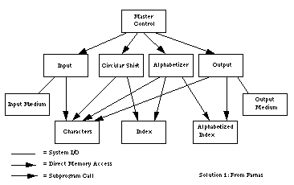
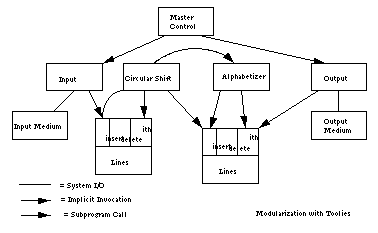

本文介绍计算机科学先驱David. L. Parnas在1972发表论文 On the Criteria To Be Used in Decomposing Systems into Modules。这篇论文首次提出了信息隐藏(information hiding）的思想，这一思想为面向对象程序设计的发展奠定了基础。在这篇论文中，Parnas 通过一个简单的例子论证和说明，如何将一个复杂系统分解为模块的标准。
这是一篇真正的经典论文！50多年过去了，虽然软件开发工具（如编译器、编程语言、IDE、中间件等）得到了长远发展，但软件开发的思想却并没有超越这篇论文。如果将论文中的模块换成服务，这一标准仍然适用于当前流行的微服务架构。
本文作者经历过几个大型软件的设计与开发经验，深刻理解模块化编程在复杂系统开发中的重要性，读完这篇论文后，有很多共鸣。本文是对这篇论文解读并谈谈自己的一些理解。
核心思想
摘要中的第一句话便给出了论文的目标：
This paper discusses modularization as a mechanism for improving the flexibility and comprehensibility of a system while allowing the shortening of its development time.
本文讨论了模块化作为一种提高系统灵活性和可理解性的同时缩短开发时间的一种机制。
灵活性和可理解性在整个软件生命周期中，都是在解决同一个问题——开发效率，但侧重的阶段不一样。灵活性更强调在软件开发阶段，提高开发效率；可理解性则更多体现在软件维护阶段将具有更低成本。
那什么是模块化编程呢？
A well-defined segmentation of the project effort ensures system modularity. Each task forms a separate, distinct program module. At implementation time each module and its inputs and outputs are well-defined, there is no confusion in the intended interface with other system modules. At checkout time the integrity of the module is tested independently; there are few scheduling problems in synchronizing the completion of several tasks before checkout can begin. Finally, the system is maintained in modular fashion; system errors and deficiencies can be traced to specific system modules, thus limiting the scope of detailed error searching.
对项目工作的明确划分可以确保系统的模块化。每项任务都构成一个独立、独特的程序模块。在实现时，每个模块及其输入和输出都是明确定义的，与其他系统模块的预期接口不会产生混淆。在验收时，可以独立测试每个模块的完整性；在开始验收之前，同步完成多项任务几乎不会出现调度问题。最后，系统以模块化方式进行维护；系统错误和缺陷可以追溯到特定的系统模块，从而限制了详细错误的查找范围。
模块化编程的核心在于模块职责的划分以及模块接口的定义。模块职责的划分是基于对具体业务场景的深入理解基础之上，它是架构层面上的一种表述。模块的接口定义是对模块职责的精确定义，它是实现层面上的一种表述。
模块化编程带来了以下三个好处：
1、可管理性。模块之间通过良好的接口定义后，不同开发团队可以并行在每个模块上工作，而几乎不需要沟通，进而提高整体开发效率。
2、产品灵活性。可以在不改变其他模块的情况下在一个模块中做出较大的改变或改进。
3、可理解性。可以一次只研究系统中的一个模块，由于每个模块都更容易独立理解，因此可以更好地理解整个系统。
那如何对系统进行模块化分解呢？Parnas 通过一个例子KWIC说明了不同的系统分解方式对后续系统变更产生的影响。
KWIC 示例
KWIC（Key Words Index Context）索引系统接受一组有序的行，每行都是一组有序的单词，每个单词都是一组有序的字符(注：这里指的有序并不是指排序，而是指按照某种方式进行组织)。任何行都可以通过反复删除第一个单词并将其附加到行尾来“循环移位”。KWIC 索引系统按字母顺序输出所有行的所有循环移位列表。
分解一：基于任务流程的分解
该方案根据执行的四个基本功能拆分为5个模块：
- 输入：从输入介质读取数据行
- 移位：对输入中的每一行进行循环移位
- 字母排序：将输入和循环移位的结果按字母顺序
- 输出：将输入和字母排序的结果按特定格式输出
- 控制模块：控制以上四个模块，依次执行输入、移位、字母排序以及输出，最终得到结果
这是一种基于任务流程的分解方法，各个模块通过内存（Core）共享存储。计算组件和共享数据之间的通信是一种不受约束的读写协议，由控制模块协调保证了对数据的顺序访问。

图片来自这里
在这个方案中，计算虽然被隔离在不同模块中，但它们共享了存储，且存储的细节实现（characters are packed four to a word）对外暴露，一但数据存储格式发生改造，将会影响到所有模块。同样，算法的改变和系统功能的增强也不容易得到处理。
在这个方案中，模块与存储，模块与模块都依赖于实现细节，存储格式和算法的变更都会传导到依赖模块中。正如 Parnas 所说，该方案在处理变化的能力方面存在许多严重的缺陷。那模块分解应该出现处理可能的变化呢？
分解二：基于信息隐藏的分解
方案二表面上看起来和方案一类似，但多了一个行存储模块，且各模块之间通过抽象接口方法数据。它和方案一有两个重要区别：
- 数据的访问通过一个行存储模块提供更加抽象的数据访问接口（如删除行、删除行单词等)，而不是将存储格式暴露给计算模块。
- 模块之间的依赖关系从数据依赖转换为接口依赖，比如字母排序模块依赖于循环位移模块。另一种实现是模块之间通过事件解耦，比如循环位移模块发生变更后，抛出一个变更事件，字母排序模块监听该事件，自动触发排序。这两种实现的主要区别是前者是显示的，后者是隐匿的。基于事件的方案耦合度更低。

图片来自这里
对于这两种分解，最终的执行结果都是一样的，它们的主要区别体现在运行时模块之间职责划分与依赖关系。相比于分解一，该方案能够更好地应对存储格式的变化以及计算模块算法的变化。比如，数据存储格式的变化只会影响到行存储模块，排序算法的变化只能会影响到排序模块。另一方面，模块也具有更好的复用性。比如，可以通过注册新的模块以在某些事件上调用这些模块，新模块的功能可以很容易添加到系统中。
分层结构
在讨论系统结构时，很容易将良好分解的好处与层次结构的好处混淆，Parnas 指出模块分解与层次结构相互独立的。关于层次结构，论文中引用了Dijkstra在The structure of “THE”-multiprogramming system中的定义，如果以模块为单元，可以描述为：
1、如果一个模块不依赖任何模块，那么它处于Level 1。
2、如果一个模块依赖于Level 1，那么它处于Level 2，以此类推。
需要注意的是，如果一个模块依赖于多个模块，且依赖模块处于不同的层次，那么这个模块的层级为最大依赖模块层次+1。
以分解二为例，行存储模块不依赖于任何其它模块，那么它为Level 1；循环位移模块依赖于行存储，那么它为Level 2；控制模块依赖于循环位移模块，那么它处于Level 3。
系统分层的好处是可以自由移除上层模块，而不影响下层模块。反过来，如果一个下层模块依赖于上层模块，我们就很难做出这种变动，而且这种情况下，也失去了“层级”的意义。对于系统的分层结构，它反映出系统中各层的稳定性，即越下层的模块，它应该越抽象，也越稳定。
对于系统设计来讲，分层结构与模块分解是正交的。分层是对系统的横向划分，处于同一层面的模块职责应该处于相同的抽象层次，也就是说在同一层面的模块，虽然它们的职责不同，但都在处理同一类事务。模块分解是对系统的纵向划分，是对职责的明确定义。
分层结构与模块分解是递归的。如果一个模块的内部实现过于复杂，也可以采用相同的策略进行分层、分模块。这里的模块可能是包，层可能是包之间的依赖关系，它们都应该遵循分层、分模块原则。
总结
软件开发人员在面临需求时，通常会按照任务流程去做系统分解，这也是软件开发人员一贯的作法，这是最常见的一种系统分解方法。但 Parnas 告诉我们，当面临一个复杂系统时，这种分解通常是错误的，引用论文中的最后的一句：
We have tried to demonstrate by these examples that it is almost always incorrect to begin the decomposition of a system into modules on the basis of a flowchart. We propose instead that one begins with a list of difficult design decisions or design decisions which are likely to change. Each module is then designed to hide such a decision from the others. Since, in most cases, design decisions transcend time of execution, modules will not correspond to steps in the processing.
我们通过这些例子试图说明，基于流程图对系统进行模块分解几乎总是错误的。相反，我们建议从列出难以设计或可能发生变化的设计决策开始，然后，设计每个模块以向其它模块隐藏这些设计决策。因为在大多数情况下，设计决策超越了执行时间，因此模块运行不会与处理步骤相对应。
谈谈对最后一句话的理解，在软件开发的整个生命周期中，开发时间占比是非常少的，80%以上的时候都是在做维护（比如增加新功能、修复BUG等）。因此，我们在做模块分解时，应该更多面向可能发生的变化，并通过信息隐藏的方式将这些变化隐藏到稳定的接口后面，这样后续在面临变更时，变更的范围可以被缩小到单个模块内部，进而提高我们变更软件的效率以及减少问题出现的机率。